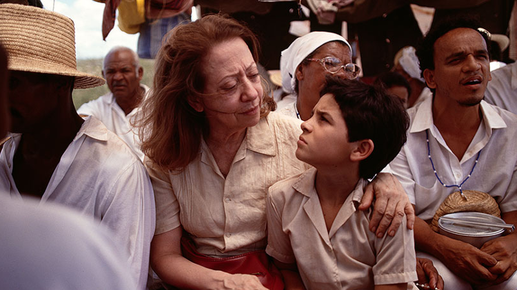
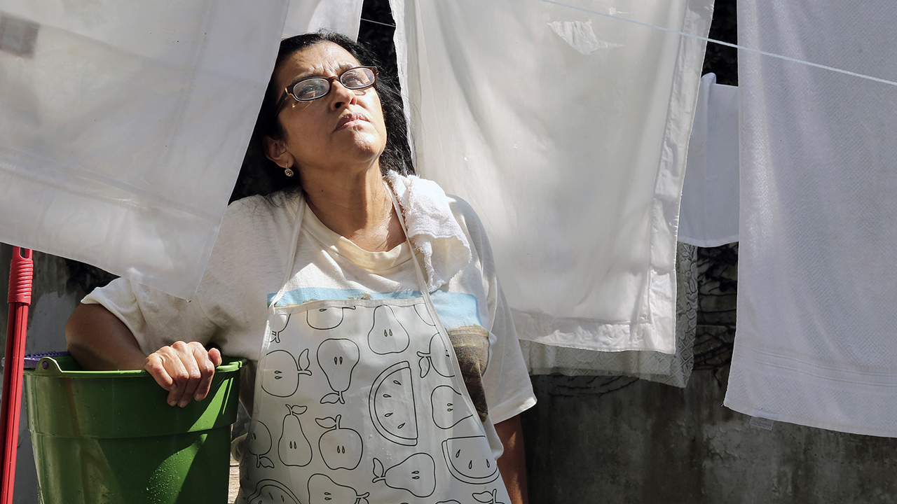

Já ouviu ou disse a frase de que "Brasil não tem nenhum filme bom"? Mas aí eu pergunto, você já foi atrás de
conhecer mais obras nacionais? Pois no post de hoje, mostrarei que temos ótimos filmes sim, com uma lista de 5 filmes
nacionais incriveis e aclamados que você precisa assistir.

Central do Brasil (1998)
Ao estilo road-movie, Central do Brasil conta a emocionante história de amizade (bastante improvável, por sinal) entre uma mulher (Fernanda Montenegro) e um garoto
(Vinícius de Oliveira) que deseja encontrar a sua família após a trágica morte de sua mãe.
Vidas Secas (1963)
O filme retrata a dura vida das famílias que vivem nas regiões secas do Nordeste brasileiro. Esta é uma belíssima adaptação do romance homônimo de Graciliano Ramos,
e que também marca o Cinema Novo, estilo conhecido por retratar os problemas sociais do Brasil em meados do século XX.
Bingo: O Rei das Manhãs (2017)
O filme conta a história de uma figura bastante aclamada na década de 80: o palhaço Bozo.Na trama, um ator sonha em ser muito famoso, mas fica frustrado quando descobre que ninguém o
reconhecerá com a "máscara" de Bozo. Assim, o artista entra num turbilhão de crises, mergulhando no mundo das drogas para ter "paz"
Hoje eu Quero Voltar Sozinho (2014)
Leonardo é um adolescente cego. Ele deseja ser mais independente, mas precisa lidar com suas limitações e a superproteção da mãe. Para decepção da melhor amiga, ele planeja fazer uma
viagem de intercâmbio. Porém a chegada de Gabriel, um novo aluno na escola, desperta sentimentos até então desconhecidos.
Que Horas Ela Volta? (2015)
A trama foca na personagem de Val (Regina Casé), uma pernambucana que se mudou para São Paulo em busca de melhores condições de vida para a sua filha. No entanto, quando esta decide viver com
a mãe na casa dos patrões, começam a ficar evidentes os preconceitos e diferenças impostas entre as classes sociais.